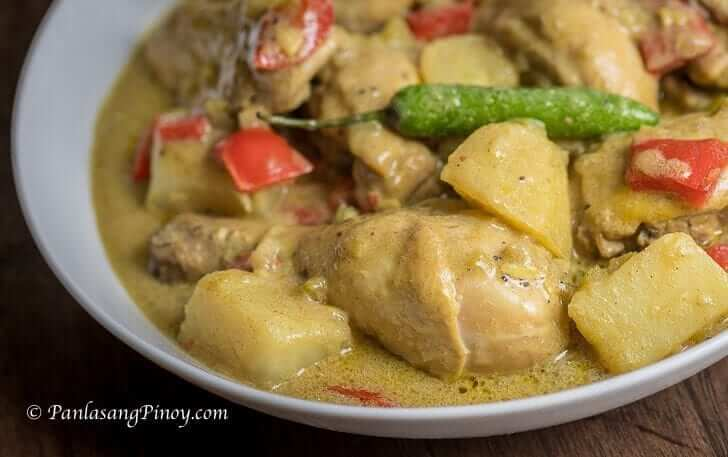

Home
Chicken Curry

Description
Filipino Chicken Curry is a creamy Filipino chicken stew cooked in coconut milk and seasoned with mild yellow curry powder. It is one of the dishes that Filipino home cooks make when they want something warm and comforting, but a little different from the usual adobo or sinigang. The flavor is gentle and creamy, and the curry powder gives a soft aroma without making the dish hot.
Filipino Chicken Curry likely came from the way our cooking absorbed outside flavors and made them fit local ingredients. Instead of using a long list of fresh spices the way Indian curry does, many Filipino home cooks use yellow curry powder mixed with coconut milk. The taste is still very Filipino because of the coconut milk and patis, but the curry powder gives it a different aroma from regular ginataan. There is no tomato in this version, and no yogurt either. The sauce is creamy from coconut milk alone.
Ingredients
- 2 1/2 lbs. chicken cut into serving pieces
- 1 pack Knorr Ginataang Gulay Mix 45 grams
- 2 pieces baking potato cubed
- 2 pieces red bell pepper sliced into squares
- 3/4 cup chopped celery
- 2 pieces red onions chopped
- 3 cloves garlic chopped
- 1 1/2 tablespoons curry powder
- 3 pieces long green chili pepper
- 4 tablespoons cooking oil
- 2 cups water
- 1 1/2 teaspoons fish sauce
- 1/4 teaspoon ground black pepper
Steps
- Heat oil in a pot. Pan fry the chicken pieces for 1 ½ to 2 minutes per side. Remove the chicken from the cooking pot. Set aside.
- Combine Knorr Ginataang Gulay recipe Mix with 2 cups water. Stir until well blended. Set aside.
- Heat remaining oil on the pot. Saute onion and garlic. Add the celery. Continue to cook until onion and celery softens.
- Pour the gata mixture into the pot. Let boil.
- Add curry powder. Stir until the powder totally dilutes in coconut milk.
- Put the pan-fried chicken into the pan. Cover and cook in medium heat for 30 to 35 minutes or until tender.
- Add red bell pepper, long green pepper, and potato. Cover the pot and cook for 5 to 8 minutes.
- Add fish sauce and ground black pepper. Stir.
- Transfer to a serving plate. Serve. Share and enjoy!
Notice
Contents of this page was taken from Panlasang Pinoy. Contents are only used for web creation practice exercises and I do not claim that any of their contents are mine.